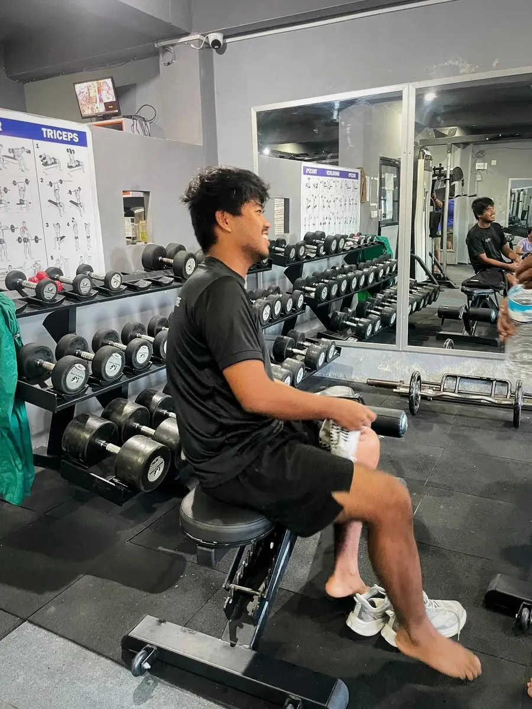

Best Time to Go to the Gym: Morning vs Evening (What Research Says)
Is morning or evening better for the gym? What research says about performance, fat loss and sleep, and how to pick the time you can actually stick to.

The best time to go to the gym is the time you can keep doing week after week. Research shows small differences between morning and evening training, but they are tiny compared with the effect of simply training consistently.
That said, each time has real pros and cons. Here is how to choose.
Morning training (4:30 to 9 AM)
Pros
- Fewer excuses. Work, traffic and family plans have not started yet.
- Quieter gym at many places, especially very early.
- Energy for the day. Many people say they feel more alert after morning exercise.
- Easier to build a habit, because mornings are more predictable than evenings.
Cons
- Body feels stiff at first. A longer warm-up helps.
- Strength may be slightly lower in the early morning for some people.
- Cold winter mornings in Nepal make getting out of bed harder.
- You need to sleep earlier to get enough rest.

Evening training (4:30 to 8:30 PM)
Pros
- Body is warm. Many people feel stronger and more flexible later in the day.
- Good stress relief after work or study.
- More time to eat before training.
Cons
- Busy gym in peak hours.
- Plans get cancelled when work runs late or friends call.
- Late hard sessions can affect sleep for some people, especially with pre-workout caffeine.
What does research say?
Studies comparing morning and evening training generally find that muscle and strength gains are similar when people train consistently at either time. Some research suggests performance is a bit higher in the late afternoon and evening, and that your body adapts to the time you usually train. If you always train at 6 AM, you get better at training at 6 AM.
For fat loss, the total amount of exercise and your diet matter far more than the time of day.
How to choose
| If you… | Try |
|---|---|
| Have unpredictable evenings | Morning |
| Struggle to wake up early | Evening |
| Want the quietest gym | Early morning or mid-afternoon |
| Use pre-workout | Morning or early evening, not late |
| Want to lift your heaviest | Late afternoon or evening |
| Are a shift worker | Whenever you are most awake, consistently |
Making morning workouts easier
- Sleep 7 to 9 hours. Go to bed earlier, not just wake up earlier.
- Lay out your gym clothes the night before.
- Small snack: a banana or a glass of milk 30 to 60 minutes before.
- Longer warm-up: 10 minutes instead of 5, especially in winter.
- Find a gym that opens early. Apex opens at 4:30 AM, so you can train before work.
Making evening workouts easier
- Pack your bag in the morning so you go straight from work.
- Eat a snack around 4 PM so you are not training hungry.
- Finish hard training 2 to 3 hours before bed if it affects your sleep.
- Skip caffeine after 2 to 3 PM.
If your schedule is messy
Many Nepalis don’t have a fixed 9-to-5 day: students, shopkeepers, shift workers, farmers and people who travel for work.
- Students: train straight after college, before you sit down to study. Once you’re home and relaxed, it’s much harder to go out again.
- Shop owners and business people: pick the quietest hour in your business day and protect it like a meeting.
- Shift workers: train at the same point in your day, for example 1–2 hours after you wake up, even if the clock time changes.
- Busy parents: 30 minutes, three times a week, beats an “ideal” plan you never do. Try a short full-body routine.
Consistency beats the “perfect” time
The best training time is the one you can repeat for months. A few habits that matter far more than morning versus evening:
- Same days every week. For example, Sunday, Tuesday and Thursday. Your body and family get used to it.
- Pack your bag the night before. One less excuse.
- Eat something small first if you train early. A banana or a glass of milk is enough.
- Sleep 7–9 hours. Late nights followed by 5 AM training don’t last.
- Track your sessions. A simple tick on a calendar keeps you honest.
Frequently asked questions
Is it better to work out on an empty stomach in the morning?
It depends on you. Some people feel fine; others feel weak or dizzy. For heavy training, a small snack usually helps performance.
Does evening exercise ruin sleep?
For most people, moderate evening exercise does not harm sleep. Very intense sessions or caffeine late in the day can.
Can I switch between morning and evening?
Yes, but a regular time makes it easier to build a habit and your body adapts best to a consistent schedule.
What time is Apex Fitness Centre open?
Apex is open from 4:30 AM to 8:30 PM, Sunday to Friday. See plans and timings.
Is it bad to train late at night?
Not for most people, but hard training very close to bedtime can make it harder to fall asleep. Try to finish 1–2 hours before you go to bed.
Sources
- WHO fact sheet: physical activity (World Health Organization)
General information, not medical advice.
General information, not medical advice. Ask a doctor if you have a health condition. Results vary from person to person.